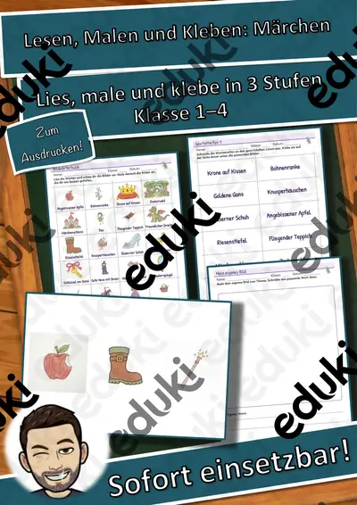
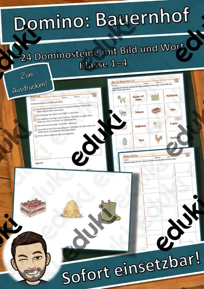
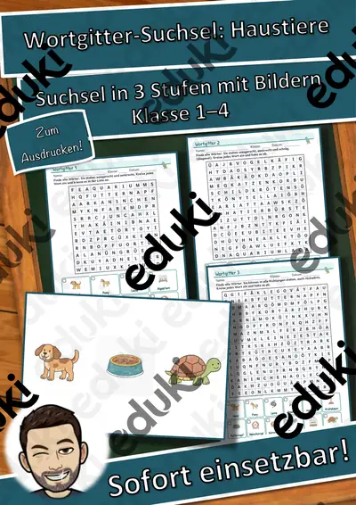
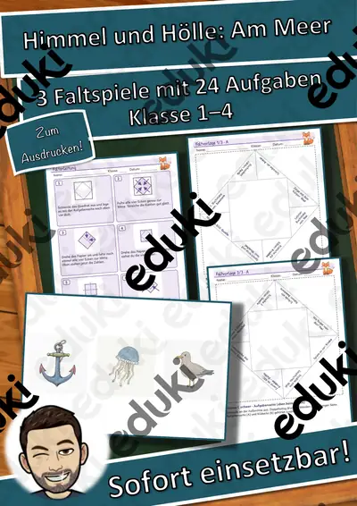

Wortspiele: Sag es nicht! Kochen und Backen – Klasse 2–4
24 Spielkarten zum Thema Kochen und Backen. Ein Kind erklärt das große Wort auf der Karte, ohne die vier verbotenen Wörter zu sagen. Die anderen raten. Dazu gehören Spielregel, Blanko-Karten zum Selbermachen, Punktetafel und eine Lösungsseite mit allen Wörtern.
Einsatz im Unterricht: Wortschatzarbeit, Freiarbeit, Stationenarbeit, Vertretungsstunde, Sprachförderung und Spielstunde. Die Vorbereitung ist genau beschrieben (Menge, Seiten, Farbe, Laminieren, Schneiden, Zeit). Alle Bilder sind eigene Zeichnungen.
Texte KI-gestützt und von mir geprüft. Die Bilder sind eigene KI-gestützte Zeichnungen (keine Fotos). Bildquelle: eigene Darstellung.
Enthalten (11 Seiten): Spielregel · Blanko-Karten · Punktetafel · Lösung
Ähnliche Materialien

Lesen, Malen und Kleben: Märchen – Lesen und Malen – Klasse 1–4

Sprechanlässe: Piraten – Sprechanlässe – Klasse 1–4

Domino: Bauernhof – Bild-Wort-Spiele – Klasse 1–4

Ich habe, wer hat? Kochen und Backen – Lese-Schleifen – Klasse 1–4

Wortspiele: Sag es nicht! Hobbys – Klasse 2–4

Wortgitter-Suchsel: Haustiere – Wortgitter – Klasse 1–4

Himmel und Hölle: Am Meer – Himmel und Hölle – Klasse 1–4